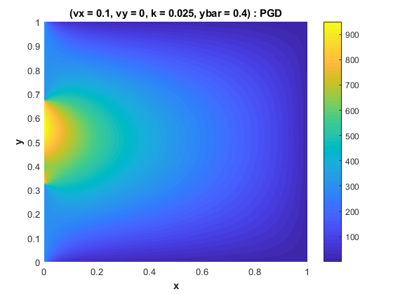

Contents
PGD CODE FOR ADVECTION-DIFFUSION EQUATION
ONLINE PHASE This code aims to compute a PGD for the problem of advection-diffusion in a square domain with fixed Dirichlet and Neumann BC. In this approach, the x-axis velocity, y-axis velocity and diffusivity parameter are defined as extra-coordinates of the problem.
Oriol CHANDRE VILA ISAE-SUPAERO, June 2018
clear all; close all; clc; warning('off'); load('WorkSpacePGD_AdvDiffSteady.mat'); figInt = 0;
Online step
Reconstruction of T. Alpha is a vector giving the weight of each term of the separated solution after detailing the value of the parameters.
s = 1; switch s case 1 iU = 5; iV = 1; iK = numel(k); case 2 iU = 20; iV = 12; iK = 6; case 3 iU = 12; iV = 20; iK = 15; end tic alph = ones(size(FF{1},2),1); alpha = FF{3}(iU,:).*FF{4}(iV,:).*FF{5}(iK,:).*alph'; T = FF{2}*diag(alpha)*FF{1}'; % Computation of the solution % PGD TEMPERATURE FIELD APPROXIMATIVE SOLUTION figInt = figInt + 1; figure(figInt); surface(x,y,T,'EdgeColor','none','facecolor','interp',... 'FaceLighting','phong'); axis tight; colorbar; h = findobj(gcf,'type','line'); set(h,'linewidth',2); set(h,'MarkerSize',10); interp = 'none'; titleStr = ['(vx = ',num2str(vx(iU)),', vy = ',num2str(vy(iV)),... ', k = ',num2str(k(iK)),', ybar = ',num2str(ybar),')',' : PGD']; title(titleStr,'Interpreter',interp,'fontweight','b'); xlabel('x','Interpreter',interp,'fontweight','b'); ylabel('y','Interpreter',interp,'fontweight','b'); temps_Online = toc
temps_Online =
0.4265
